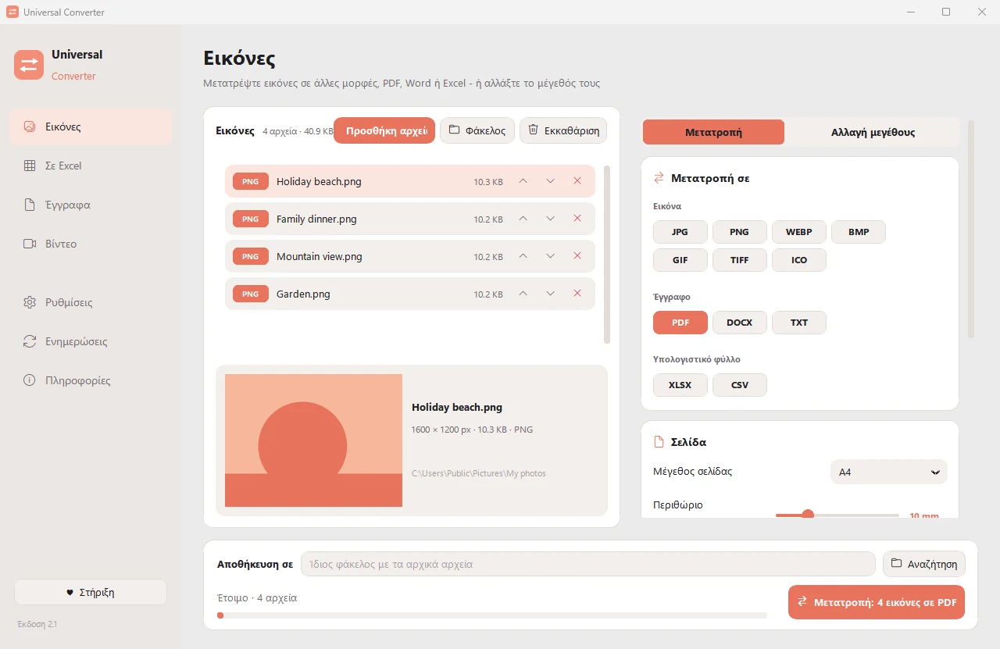
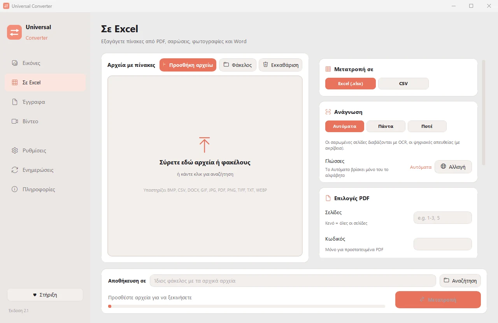
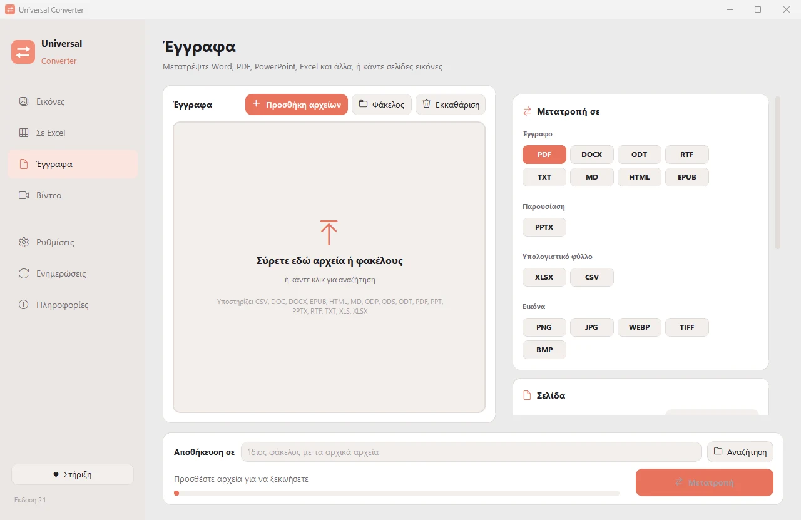

Μετατρέψτε τα αρχεία σας στον δικό σας υπολογιστή
Εικόνες, έγγραφα, βίντεο και ήχος, PDF και πίνακες σε Excel, όλα σε μία εφαρμογή. Τίποτα δεν ανεβαίνει: τα αρχεία σας δεν φεύγουν ποτέ από τον υπολογιστή σας.

Ιδιωτικό
Όλα γίνονται στον υπολογιστή σας. Χωρίς ανεβάσματα, χωρίς αναμονή, χωρίς όρια μεγέθους.
Δωρεάν
Δωρεάν στη χρήση, χωρίς διαφημίσεις, λογαριασμό ή υδατογράφημα.
10 γλώσσες
Ελληνικά, αγγλικά, ισπανικά, ιταλικά, γερμανικά, γαλλικά, πορτογαλικά, κινεζικά, ιαπωνικά και κορεατικά.
Τέσσερα εργαλεία σε ένα παράθυρο
Εικόνες
Μετατροπή μεταξύ JPG, PNG, WEBP, TIFF, BMP, GIF και ICO. Αλλαγή μεγέθους σε pixel, ποσοστό ή μέγεθος αρχείου, ένωση εικόνων σε PDF ή Word, και ανάγνωση του κειμένου στις εικόνες (OCR).

Σε Excel
Βγάλτε πίνακες από PDF, σαρώσεις και φωτογραφίες σε Excel ή CSV: αντίγραφα κίνησης λογαριασμού, τιμολόγια, τιμοκατάλογοι. Διαβάζει ελληνικά, αγγλικά, ισπανικά και πάνω από 30 ακόμη γλώσσες.

Έγγραφα
Μετατροπή μεταξύ PDF, Word, ODT, RTF, TXT, Markdown, HTML, EPUB, PowerPoint και Excel. Σελίδες σε εικόνες και ένωση πολλών αρχείων σε ένα PDF. Οι γραμματοσειρές, τα μεγέθη και τα χρώματα διατηρούνται.

Βίντεο
Μετατροπή και συμπίεση βίντεο σε MP4, MKV, WebM, MOV ή AVI με AV1, H.265, H.264 ή VP9. Περικοπή, κόψιμο, περιστροφή και αλλαγή μεγέθους, GIF, αποθήκευση καρέ ως εικόνες, ή μόνο ο ήχος σε MP3, M4A, FLAC, WAV, OGG ή Opus.
- Χρησιμοποιεί την κάρτα γραφικών για τα βίντεο όταν γίνεται: συνήθως 5 έως 20 φορές πιο γρήγορα.
- Σύρετε ολόκληρους φακέλους: όλα τα αρχεία μετατρέπονται μαζί.
- Ενημερώνεται μόνο του, με ψηφιακά επαληθευμένες λήψεις.
- Φωτεινή και σκούρα εμφάνιση, όπως ο υπολογιστής σας.
Πώς λειτουργεί
- Ανοίξτε το Universal Converter και επιλέξτε Εικόνες · Σε Excel · Έγγραφα · Βίντεο στα αριστερά.
- Σύρετε τα αρχεία σας ή έναν ολόκληρο φάκελο στο παράθυρο, ή πατήστε Προσθήκη αρχείων.
- Πατήστε Μετατροπή. Τα νέα αρχεία αποθηκεύονται δίπλα στα αρχικά ή στον φάκελο που επιλέγετε.
Τι μπορεί να κάνει
- Συμπίεση βίντεο χωρίς ανέβασμα
- Μετατροπή MKV, MOV, AVI και WMV σε MP4
- Αποθήκευση του ήχου ενός βίντεο σε MP3
- GIF από βίντεο
- Πίνακες από PDF σε Excel
- Ένωση φωτογραφιών σε ένα PDF
- Μετατροπή PDF σε Word
- Ένωση πολλών αρχείων σε ένα PDF
- Αντιγραφή του κειμένου από εικόνα (OCR)
- Μετατροπή WEBP σε JPG ή PNG
- Αλλαγή μεγέθους εικόνων ή μείωση σε μέγεθος αρχείου
Ερωτήσεις
Είναι πραγματικά δωρεάν;
Ναι. Το Universal Converter είναι δωρεάν στη χρήση, χωρίς διαφημίσεις, λογαριασμό ή χρονικό όριο. Αν σας βοηθά, μπορείτε να στηρίξετε την ανάπτυξή του με μια εθελοντική συνεισφορά, αλλά δεν είναι ποτέ υποχρεωτικό.
Ανεβαίνουν κάπου τα αρχεία μου;
Όχι. Κάθε μετατροπή γίνεται στον δικό σας υπολογιστή, γι' αυτό λειτουργεί και χωρίς σύνδεση στο internet. Η εφαρμογή συνδέεται μόνο για να ελέγξει για ενημερώσεις.
Τα Windows δείχνουν προειδοποίηση SmartScreen. Είναι φυσιολογικό;
Ναι. Το πρόγραμμα εγκατάστασης δεν έχει ακόμη ψηφιακή υπογραφή κώδικα, οπότε τα Windows δεν το αναγνωρίζουν. Επιλέξτε «Περισσότερες πληροφορίες» και μετά «Εκτέλεση οπωσδήποτε». Οι επόμενες ενημερώσεις επαληθεύονται ψηφιακά από την ίδια την εφαρμογή.
Πώς το ανοίγω σε Mac;
Ανοίξτε το αρχείο που κατεβάσατε και σύρετε το Universal Converter στις Εφαρμογές. Η εφαρμογή δεν είναι υπογεγραμμένη από την Apple, οπότε την πρώτη φορά το macOS τη μπλοκάρει: ανοίξτε Ρυθμίσεις συστήματος > Απόρρητο και ασφάλεια και πατήστε «Άνοιγμα οπωσδήποτε». Χρειάζεται μόνο μία φορά.
Πώς το εγκαθιστώ σε Android;
Κατεβάστε το APK στο κινητό, ανοίξτε το και επιτρέψτε την εγκατάσταση όταν σας ζητηθεί. Η έκδοση Android είναι beta, στα ελληνικά και τα αγγλικά.
Σε ποιες γλώσσες είναι;
Η εφαρμογή είναι στα ελληνικά, αγγλικά, ισπανικά, ιταλικά, γερμανικά, γαλλικά, πορτογαλικά, κινεζικά, ιαπωνικά και κορεατικά. Τη γλώσσα τη διαλέγετε στην εγκατάσταση ή αργότερα στις Ρυθμίσεις.
Στηρίξτε το Universal Converter
Το Universal Converter το φτιάχνει ένας άνθρωπος και παραμένει δωρεάν. Αν σας γλιτώνει χρόνο, μια εθελοντική συνεισφορά βοηθά να συνεχίσει. Οι πληρωμές γίνονται μέσω PayPal ή Revolut και η εφαρμογή δεν βλέπει ποτέ τα στοιχεία πληρωμής σας.